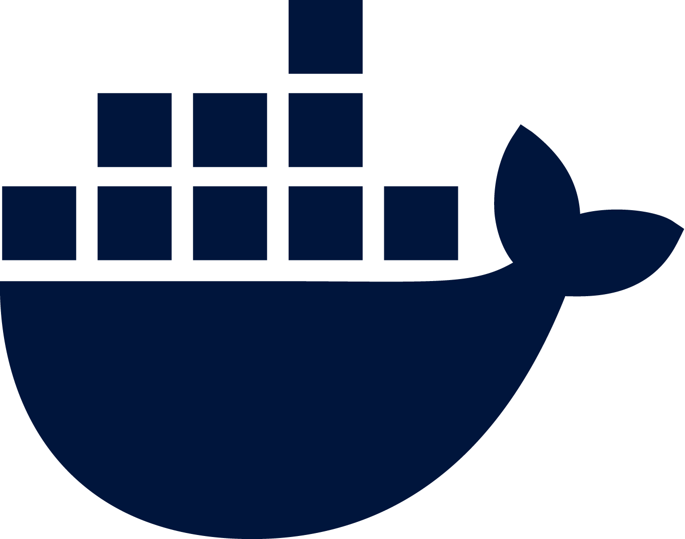

+38 068 410 86 40
Email:
exwarvlad@gmail.com
![[ava]](images/ava.jpeg)
Vladyslav Serhiyovych Akymov
Target
Receive offer Senior Backend Engineer / Lead Engineer / Solution Architect with remote working
Recent projects
Founder & Lead Engineer
Feb 2024 – Present (2 yrs 4 mos)
Bearer tokens on your backend in 5 mins. Appropriate for login, logout one time or more authorizations.
It's my brand that I have created. I designed database from scratch as tokens storage using Rust langueage, computer science and system designe knowledge.
I designed 8 SDK's on Ruby, Python, Java, JavaScript, Elixir, Erlang, Go and PHP. They interact directly or via RPC protocol with the CRUDJT database. I also write on Medium
EPAM
Senior Software EngineerMay 2022 - Sep 2023 (1yr 5 mos)
I worked specifically with life insurance in Assurance corporation. Big enterprice with ~2 000 people from different time zones. In our team where ~16 engineers. I developed functionality, such as internal retry for HTTPS requests, which the team can reuse in their code. Covered the code with unit tests (RSpec, VCR). Resolved merge conflicts in extreme conditions. Deployed the code to production, supported after release. Reviewed teammates. Estimated sprints with the team via Scrum-Poker. Wrote Sidekiq jobs to send data to other microservices, Rake Jobs and Terraform to delete obsolete tables in Postgres and store them on AWS Glacier in archives in CSV files. Sanitized SQL injections. Wrote REST API endpoints with Swagger documentation and JSON schema. Fixed bugs on the project by ticket priorities.
Experience and professional skills
I have 9 years commercial engineer experience. More in my Linkedin
Amazing LeetCode algorithms solverIncredible CodeWar coder
I also use these technologies
![[Ruby]](images/ruby.png) Ruby lord level. I use Ruby on many commercial projects, but I am not tied to a specific programming language. I can switch to Rust, Go, Java, etc. If needed
Ruby lord level. I use Ruby on many commercial projects, but I am not tied to a specific programming language. I can switch to Rust, Go, Java, etc. If needed ![[Ruby on Rails]](images/rails.png) Ruby on Rails high level
Ruby on Rails high level
Docker CRUDJT backend server container image![[Redis]](images/redis.png) Redis high level
Redis high level![[PG]](images/pg.png) PG/SQL amazing level
PG/SQL amazing level![[Rspec]](images/rspec.png) Rspec lord level
Rspec lord level![[English]](images/english_spoken.png) English verbal and written at functional business level (advanced in technical English)
English verbal and written at functional business level (advanced in technical English)
About yourself
I like create technology, eat ramen, visit Coffee Shop
Education of programmer
πάθει μάθος learning through suffering
I study books and practice a lot of their approaches on production, these are Ruby
Books that I haven't read and want to read: Implementing Doman Driven Design by Vaughn Vernon. The Art of Computer Programming by Donald Knuth. Designing Data-Intensive Applications by Martin Kleppmann. And many other